THE BEST PASS
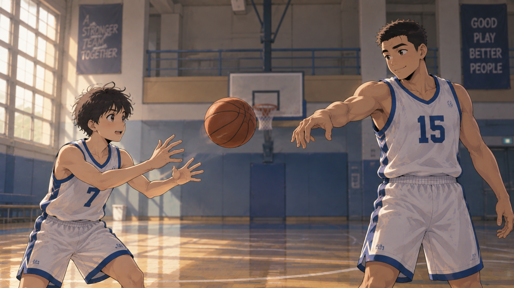
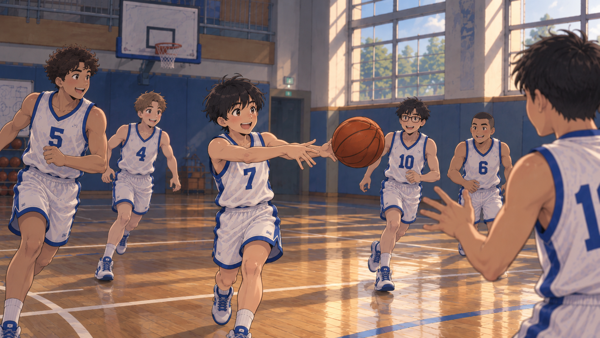
Lin was the captain of his high school basketball team. He was not tall or strong, but he was very good at shooting. He also liked to pass the ball and help his teammates. He knew that basketball was not a game for only one person. Because of this, his coach and teammates trusted him.
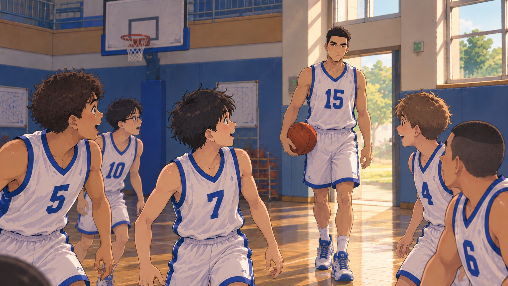
One day, a new player named Chen joined the team. Chen was very different from Lin. He was 200 cm tall and very strong. During practice, he could easily use his body to get close to the basket and score.
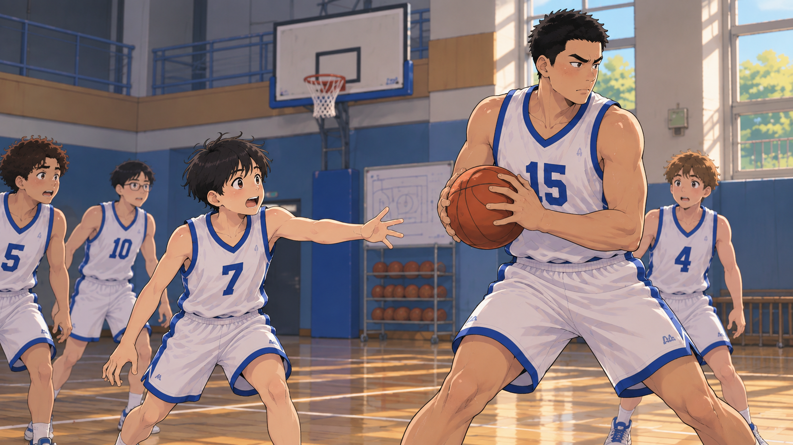
However, there was one big problem. Chen never passed the ball. Even when two players tried to stop him, he still tried to score by himself. His teammates started to feel unhappy. The coach told Chen to pass more, but Chen did not listen. He thought, “Why should I pass? They are not as good as me.” Lin saw that the team was becoming less happy, so he wanted to teach Chen a lesson.
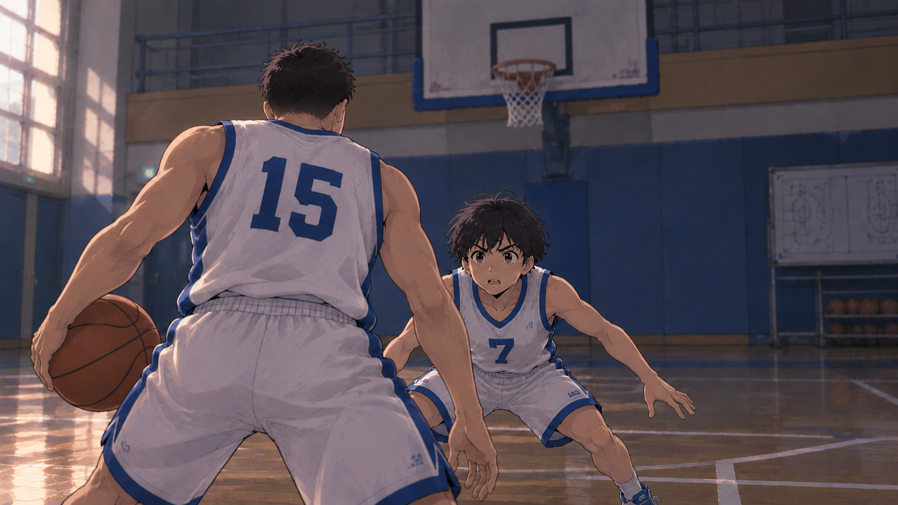
After practice one day, Lin asked Chen to play one-on-one. Chen looked at the small and thin Lin and laughed. He quickly said yes. At first, Chen controlled the game with his height and strength. Lin could not stop him, but he did not give up. He used his speed and shooting to score several times from far away. Chen became angry. Both players were tired, but they only thought about beating each other.
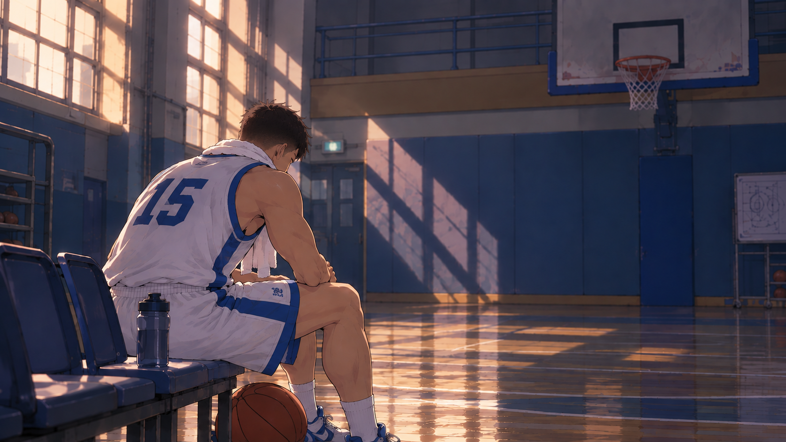
Suddenly, Lin understood something. The coach had once told the team that fighting with teammates could not solve the problem. A one-on-one game would never teach Chen about teamwork. Lin stopped and said, “Chen, please trust me in our next game.” Chen said nothing. He seemed to be struggling.
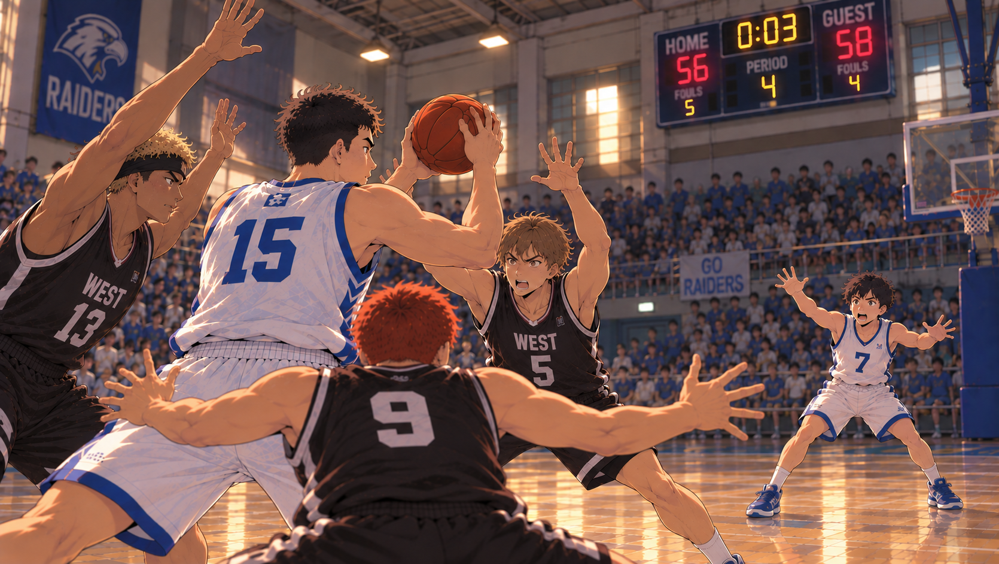
A few days later, the team played a game with another school. Near the end, the score was very close. Chen was finally sent onto the court by the coach. He got the rebound and tried to score by himself again, but three players quickly surrounded him. There were only a few seconds left. Lin was standing alone on the other side of the court.
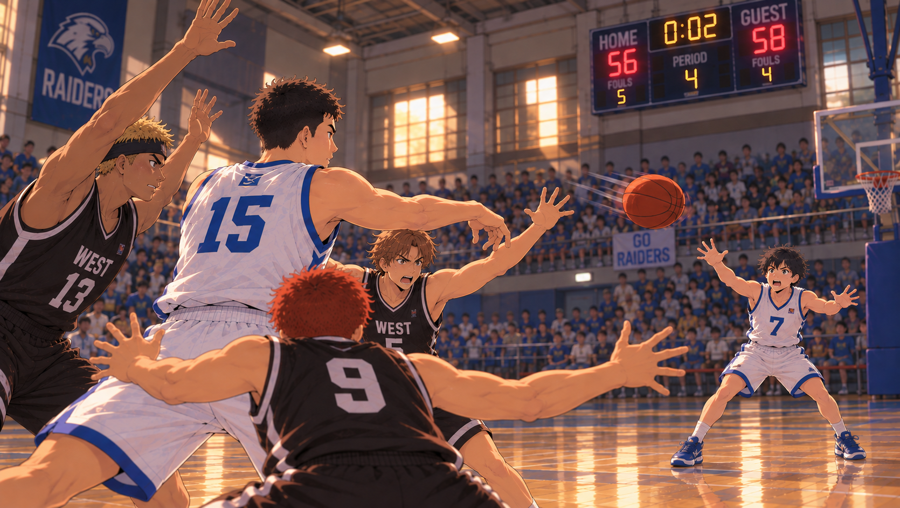
“Chen!” Lin called. Chen looked at the basket and then at Lin. He wanted to score by himself, but he remembered what Lin had said. This time, he decided to trust his teammate. For the first time, Chen passed the ball.
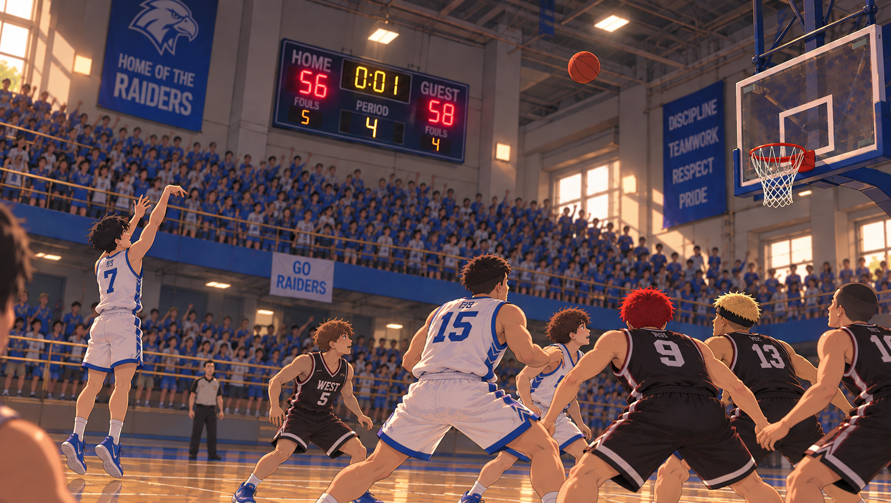
Lin caught it and made a three-point shot just before time ran out.
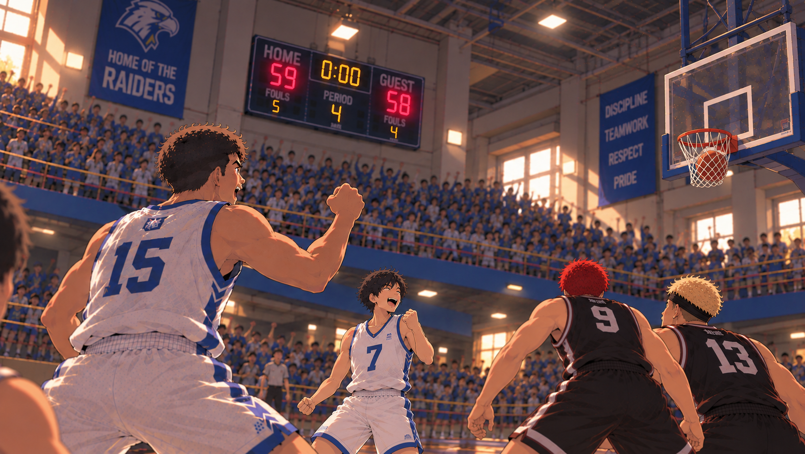
Swish! The ball went into the basket, and the team won the game. Everyone cheered. Chen finally started to understand why Lin always passed the ball. Passing did not make him a weaker player. Instead, it made the whole team stronger. His teammates were also happy to see that Chen was starting to trust them.
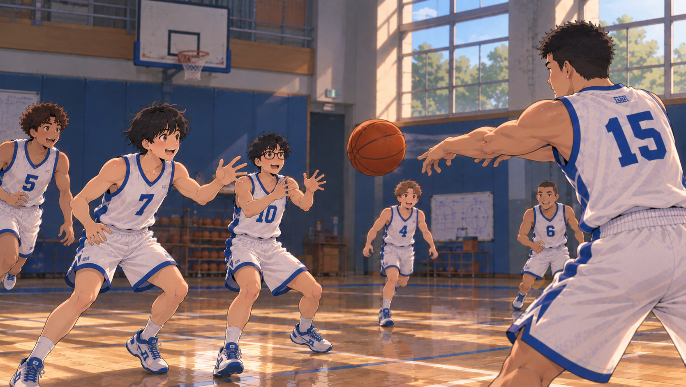
At the next practice, Chen did not try to do everything alone. He passed the ball to different teammates and let them score.
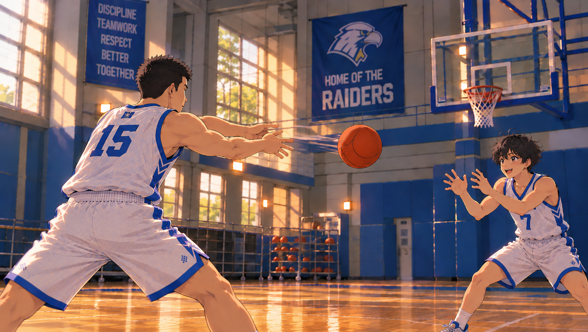
At the end of practice, Chen passed the ball back to Lin. “Again?” he asked. Lin smiled and said, “Again.”
END